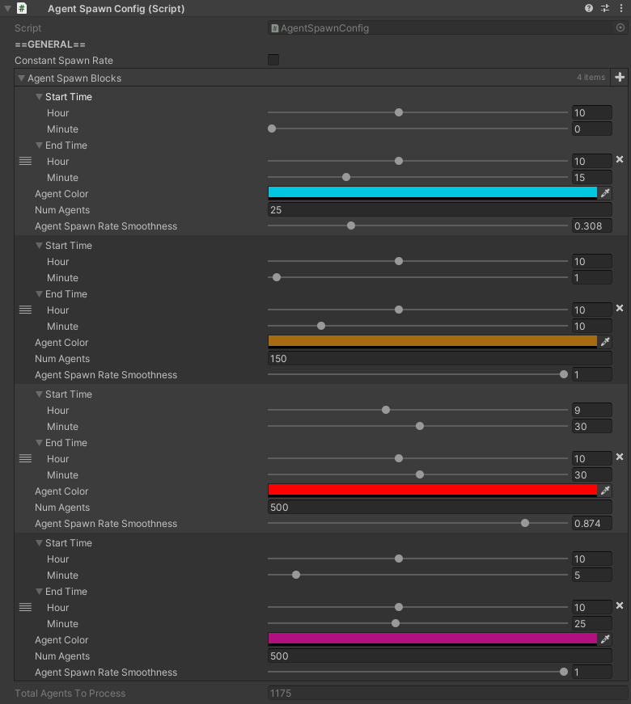

AgentSpawnConfig

How to Locate
The AgentSpawnConfig component is located on the GameObject named "Simulation", which can be found in the hierarchy.
Settings
| Setting | Description |
|---|---|
| Constant Spawn Rate |
Toggles whether or not agents should spawn at a constant rate over the duration of the simulation. |
| Start Time | Only applicable if Constant Spawn Rate is true.Start time of the simulation. |
| Total Num Agents |
Only applicable if Constant Spawn Rate is true.Total agents that will spawn between Start Time and End Time. |
| Agent Spawn Blocks |
Only applicable if Constant Spawn Rate is false.List of references to AgentSpawnBlocks. |
| End Time | End time of the simulation. |
AgentSpawnBlock
AgentSpawnBlocks define how agents will spawn over a period of time. The end time for each spawn block is the start time of the next spawn block (or End Time if it's the last spawn block).
AgentSpawnBlock Settings
| Setting | Description |
|---|---|
| Start Time | Start time of the simulation spawn block. Also acts as the end time of the spawn block listed previously to this one. |
| Num Agents | Total agents that will spawn between Start Time of the spawn block, and the Start Time of the next block. |
| Agent Spawn Rate Smoothness |
How "smooth" the agents will spawn throughout the duration of the spawn block. See Spawn Rate Smoothness for details. |
Spawn Rate Smoothness
The value of Agent Spawn Rate Smoothness for an individual AgentSpawnBlock represents the minimum percentage of time within a spawn block that all agents could possible spawn.
For example, let's say we have a spawn block with a start time of 10am, a duration of 1 hour, and 60 agents that should spawn within this spawn block. Internally, when a spawn block is processed, the variable maxTimeBetweenAgents is created to represent the max time that can pass before another agent must spawn in order to ensure all agents are spawned within the duration of a spawn block. With 60 agents over a 1 hour spawn block, that means that an agent must spawn, at most, every 1 minute.
Spawn rate smoothness simply represents a percentage of the maxTimeBetweenAgents for the lower bound of the time range for when an agent must be spawned in. This range is then selected from at random.
If spawn rate smoothness was 1, then the lower bound for an agent's spawn rate is 100% of maxTimeBetweenAgents, which gives us a random time between 1 minute and 1 minute (which is of course just 1 minute always, as you cannot select a random number between just one number).
If the spawn rate smoothness was 0.1, then the lower bound for an agent's spawn rate is 10% of maxTimeBetweenAgents, which gives us a random time between 6 seconds and 1 minute. This means that with a smoothness of 0.1, and 60 agents spawning over 1 hour, all 60 agents will spawn between 6 minutes at the lower bound, and 1 hour at the upper bound. Randomness will determine how close to either of these bounds the simulation actually comes.
In summary, the lower spawn rate smoothness, the most "clumped together" agents may spawn. The higher it is, the most smooth and consistently agents will spawn across the duration of a spawn block.